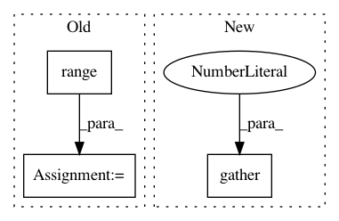

2baaefbede4d08ab8f9080430d9a98f84a2d01e3,bindsnet/network/topology.py,MaxPool2dConnection,compute,#MaxPool2dConnection#Any#,400
Before Change
B, C, H, W = indices.shape
output = torch.zeros_like(indices)
for b in range(B):
for c in range(C):
output[b][c] = s[b][c].take(indices[b][c])
return output.float()
def update(self, **kwargs) -> None:
// language=rst
After Change
return_indices=True,
)
return s.flatten(2).gather(2, indices.flatten(2)).view_as(indices).float()
def update(self, **kwargs) -> None:
// language=rst
In pattern: SUPERPATTERN
Frequency: 4
Non-data size: 3
Instances
Project Name: BindsNET/bindsnet
Commit Name: 2baaefbede4d08ab8f9080430d9a98f84a2d01e3
Time: 2020-03-04
Author: 280943872@qq.com
File Name: bindsnet/network/topology.py
Class Name: MaxPool2dConnection
Method Name: compute
Project Name: OpenNMT/OpenNMT-tf
Commit Name: 83ea5808a36de70b86c07bcb02211fd07041532e
Time: 2019-09-03
Author: guillaume.klein@systrangroup.com
File Name: opennmt/models/sequence_to_sequence.py
Class Name:
Method Name: align_tokens_from_attention
Project Name: SPFlow/SPFlow
Commit Name: 3297b14525656040f3a456b2c23c7ffb7e6b7cfc
Time: 2020-03-22
Author: steven.lang.mz@gmail.com
File Name: src/spn/algorithms/layerwise/distributions.py
Class Name:
Method Name: dist_sample
Project Name: ixaxaar/pytorch-dnc
Commit Name: 2026a8939d9ccc3e26ac776db5b4788846fd166c
Time: 2017-12-03
Author: root@ixaxaar.in
File Name: dnc/sparse_memory.py
Class Name: SparseMemory
Method Name: read_from_sparse_memory